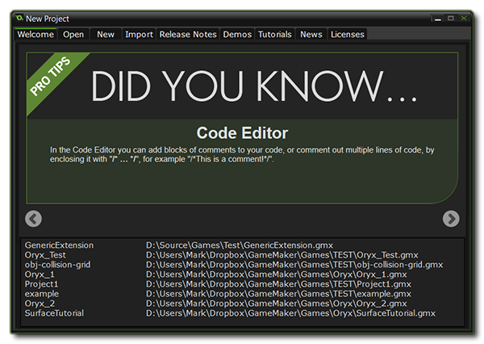
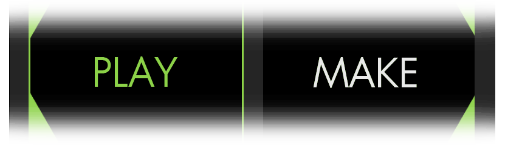
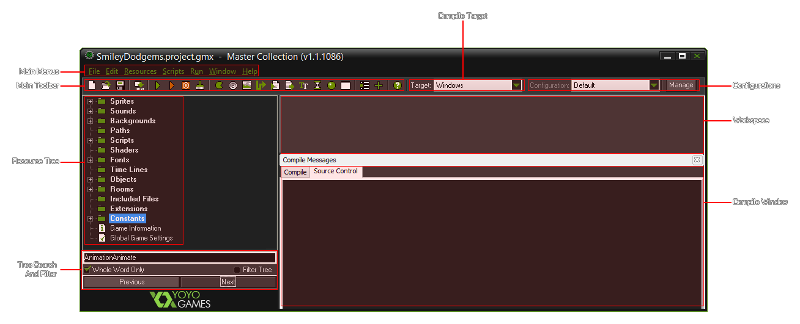
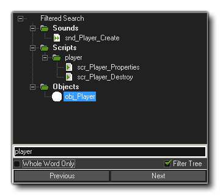
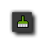
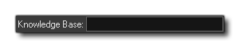

第一个按钮会打开 Steam Player，你可以在 Steam Workshop 订阅或上传任何游戏。
第一个按钮会打开 Steam Player，你可以在 Steam Workshop 订阅或上传任何游戏。 第二个按钮将打开 Steam 客户端的 GameMaker: Studio Steam Workshop 页面。
第二个按钮将打开 Steam 客户端的 GameMaker: Studio Steam Workshop 页面。最后的按钮可以让你打开 GameMaker: Studio IDE 的另一个版本，所以你可以同时开发两个 (或多个) 工程。
打开 GameMaker: Studio 的默认界面见下图 (除非你使用了 Steam 客户端，见下文):

如果你从 Steam 购买了 GameMaker: Studio ，在启动时可以看到一个选项 (见下图) ，可以选择从Steam Workshop Play (玩) 或者使用程序 Make (制作) 游戏。如果你选择 Play GameMaker: Studio 会关闭， Steam Player 将会打开，但是如果选择了 Make 你将会看到标准的 GameMaker: Studio 启动界面。

在标准的启动界面顶部，可以看到九个标签: Welcome (欢迎，总是初始显示界面), Open (打开), New (新建), Import (导入), Release Notes (更新日志), Demos (演示), Tutorials (教程), News (新闻) 和 Licences (许可)。下面是上述选项卡的功能概述:
- 欢迎: 打开 GameMaker: Studio 时启动屏幕的标准界面，下面有最近工程列表。
- 打开: 打开电脑上的文件。
- 新建: 选择一个目录、输入工程名以新建工程，进入 GameMaker: Studio 主界面。
- 导入: 这个选项卡里你可以加载 *.gmz 工程或者导入其他版本 GameMaker 的文件,包括 GameMaker 6 (*.gm6)， GameMaker 7 和 8 (*.gmk 和 *.gm81) 以及 GameMaker 8.1 (*.gm81) 或者更老的 (*.gmd) 文件。值得注意的是，那些老的文件类型，很可能是很多年没变化的游戏返工。此外，你也可以载入 GameMaker 备份文件 (*.gb1, *.gb2 等)。
- 更新日志: 你可以看到 GameMaker: Studio 每个版本的更新日志。这些日志记录了bug修复和变化，告诉你正在使用的版本。
- 演示: 允许你查看 GameMaker: Studio 演示文件。不同的演示都是解释一个功能或概念，而不是概述。因此建议你有 GameMaker: Studio 和 GML 基础再来看这些演示。这些演示来自于RSS feed的推送，所以你需要联网来访问它们。你也可以通过点击窗口左下按钮刷新 feed (检查新文件)。
- 教程: 这个选项卡用来让你选择 GameMaker: Studio 教程。这些设计用来介绍如何使用 GameMaker: Studio 和创建新工程之前看看应该如何开始。和演示一样，来自于RSS feed的推送，所以你需要联网来访问它们。 你也可以通过点击窗口左下按钮刷新 feed (检查新文件)。
- 新闻: 会显示 YoYo Games 最近的新闻。这些新闻包括 GameMaker: Studio 的开发信息、新版本、比赛和其他任何张贴在 YoYo Games 网站的内容。
- 许可: 这个选项卡显示 GameMaker: Studio 的许可，以及所有使用的第三方产品的许可。
在标签的下方，有部分有关 GameMaker: Studio,的提示、技巧，你可以通过两边的箭头滚动，再下方，则是列出之前打开过的工程使得你可以快速回到之前离开的工程。
你可以点击 New Project 选项卡创建你的第一个游戏工程。在这里你可以选择加载老版本工程或者新建一个工程。当创建新工程的时候，你可以选择工程保存的目录 (将使用 *.GMX 格式保存)以及工程名。点击 Create 就可以创建并保存项目文件了。
一旦加载或创建项目，你将看到这样的 GameMaker: Studio 用户图形界面:

这是 GameMaker: Studio 的主界面，在这里你可以控制你当前工程的各个方面。在左边，你可以看到在用户手册其他部分所提到的不同的 resources (资源): Sprites (精灵)、Sounds (声音)、Backgrounds (背景)、Paths (路径)、Scripts (脚本)、Fonts (字体)、Time Lines (时间轴)、Objects (物体)、Global Game Settings (游戏全局设置) 和 Extensions (扩展)。在窗口顶部有菜单和工具栏用来方便地访问一些最常用的指令。下面我们将简单地介绍各种菜单、按钮等... 但更深入的部分将在手册的后面讲解。值得注意的是，许多功能相同的按钮出现在 GameMaker: Studio不同的地方，这是因为 GameMaker: Studio 想要给你一个最简单、最自然的工作环境，让你觉得舒适。
Steam 用户在工具栏上有三个额外按钮:
最后的按钮可以让你打开 GameMaker: Studio IDE 的另一个版本，所以你可以同时开发两个 (或多个) 工程。
在主窗口的左边可以找到资源树。在这里你可以看到游戏中所有资源的树视图。它的工作方式和Windows资源管理器类似，所以你可以在制作游戏的时候找到熟悉的感觉。如果一个项前面有一个 +，你可以点击它来查看里面的资源(展开)。通过点击 - 可以收缩已经展开的资源树。你可以通过单击选中然后再次单击的方式更改资源的名字 (除了资源树顶级的资源类型名称)。双击将会打开资源的属性界面，你可以编辑和修改相关的设置。而右键这可以打开快捷菜单，和 Edit Menu (编辑菜单)的内容类似。
你可以选中一个资源然后拖到适当的位置来改变排序。你还可以通过资源树底部的搜索和过滤设置来选择资源树里只显示你感兴趣的东西:

GameMaker: Studio 中的工具栏包含各种按钮可以创建目前你看到的资源，以及其他的按钮:创建新工程、打开工程、保存工程、创建可执行程序 (导出最终工程)、打开全局游戏设定和扩展包以及打开帮助文件。所有这些命令都可以通过下拉菜单或 "热键" 来执行。
需要注意下面两个按钮，他们并不存在于 GameMaker: Studio GUI 的其他位置: 停止 web 服务器
停止 web 服务器
这个按钮可以用来取消你的游戏编译目标模块，或者 (只在一定的目标中) 停止运行游戏。
清除工程资源编译缓存
按下此按钮可以清除工程编译缓存。Pressing this button will clear the current asset compiler cache. GameMaker: Studio 储存 images、sounds、scripts 等... 使用缓存可以节约编译的时间使得只编译没有编译过得资源。然而这种缓存会随着时间毁去一部分或者你可能希望做一个没有缓存的完整测试，这个时候你可以按这个按钮清除缓存。
此下拉菜单可以用选择的生成方式编译和测试你的游戏。这种方式可以很快地使用 GameMaker: Studio 内不同的模块生成不同的文件。现有的目标模块:
| Windows | 包含在所有版本中 |
| Steam WORKSHOP | 包含在 steam 购买的 GameMaker: Studio 的所有版本中 |
| MacOSX | 只存在于专业版additional module for the Professional Version |
| Windows 8 (JavaScript) | 只存在于专业版additional module for the Professional Version |
| Windows 8 (Native) | 只存在于专业版additional module for the Professional Version |
| HTML5 | 只存在于专业版additional module for the Professional Version |
| Ubuntu (Linux) | 只存在于专业版additional module for the Professional Version |
| iOS | 只存在于专业版additional module for the Professional Version |
| Android | 只存在于专业版additional module for the Professional Version |
| Tizen | 只存在于专业版additional module for the Professional Version |
| Windows Phone | 只存在于专业版additional module for the Professional Version |
| GameMaker: Player | 上传到 GameMaker: Player 的附加模块 |
请注意额外的模块只能在 GameMaker: Studio 专业版 中使用。如果你在 Steam 上购买了 GameMaker: Studio，你将会拥有 Steam Workshop 的目标模块。这将允许你直接发布你的windows游戏以提供 Steam 上的其他玩家下载和玩。更多信息请点击 这里.
在这个下拉菜单你可以找到当前 GameMaker: Studio 的配置信息，旁边有一个 "Manage (管理)" 按钮。通过点击这个按钮你可以打开配置窗口使得你可以添加移除或重名民配置。更多信息可以在下面的章节找到:
注意: 此功能仅限于 Professional Version 的 GameMaker: Studio.
在这个区域你可以编辑资源、创建房间、修改物体 、code (代码) 和其他资源。
在GUI的顶部可以发现主菜单。很多人有自己的设置选项。你可以在下面的列表中找到详细信息:
这是 GameMaker: Studio GUI 最后一个值得注意的地方，搜索框，可以在 IDE 的右上角找到:  如果你正在寻找更详细的信息，而主题和手册里都没有相关内容 (有很多此文档之外的东西) 或者你认为这儿可能是个 bug，那么你就可以在这里输入关键字搜索 YoYo Games 知识库，然后在浏览器的新打开的选项卡中就会列出你想要查询的相关主题列表。例如，如果你需要获得更多关于广告的信息，只需要在搜索框输入 “ads” 并按回车就会带你到如下页面: 广告教程列表
| Converted from CHM to HTML with chm2web Pro 2.85 (unicode) |